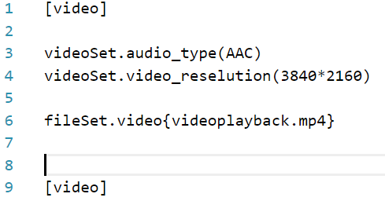

In The 21st Centruy, the ChunkGlow Team decided to make a division after they made ChunkGlow Media International Network. They have chances to team up with YouTube and Spotify to make the company and the default radio station is 100.90 FM and 875 AM. Their website is "podcast.chunkglow.org" (not yet set)
In making their podcast, they use a special programming language called "D#" and that type of language modifies and configures audio, video and image quality.
